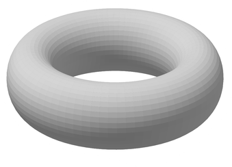
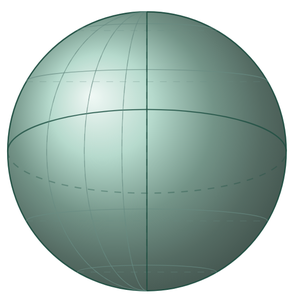
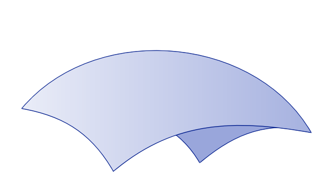

AFOSR COE CODAC
From Local to Global
Safety-critical control on nonlinear and topologically complex spaces
Warren Dixon and Keith Currier
Virginia Tech · University of Florida
CODAC Kickoff Meeting · Arlington, VA · September 2026

Why This Matters
The safety problem changes when the state space is a manifold.
- Control barrier functions (CBFs) certify forward invariance: once safe, always safe.
- Most CBF theory assumes Euclidean coordinates and globally consistent data.
- Real systems may evolve on \(\mathrm{SO}(3)\), configuration manifolds, or spaces with nontrivial topology.
- Local models are easy to construct, but a single global controller may not exist in one coordinate chart.

\(\mathbb{T}^2\)
\(\mathrm{SO}(3)\)
\(\mathcal{M}\)Need: an intrinsic local-to-global safety framework.
2
The Core Idea
Treat feedback laws as local objects that must agree on overlaps.
- Cover the manifold with local regions / charts.
- Design a safe local feedback law in each region.
- Require compatibility where regions overlap.
- Glue compatible local laws into a continuous global law.
Local safety + overlap agreement = global safety.
[1] M. Agrios. 2022 · diagram after Agrios
3
What the Work Contributes
The framework handles topology and points toward broad system classes.
A geometric foundation for composing safety-critical controllers:
Intrinsic formulation
Defines CBF constraints on manifolds using vector bundles, not a privileged global coordinate system.
Sheaf structure
Organizes local feedback laws and their restrictions; compatibility is stated precisely on overlaps.
Global guarantee
Under regularity and compatibility conditions, local safe controllers combine into a continuous global controller.
The contribution is not just another controller: it is a composition principle for (safe) control on complex spaces.
4
Future Efforts
From local geometric structure to scalable, structure-preserving decision systems.
Sheaf models
Local-to-global state and data
➔
Metriplectic dynamics
Hamiltonian + dissipative flow
➔
ADP / RL / AI
Approximate value and policy iteration
Mathematical foundations
- Define sheaf-valued state spaces and morphisms for open, hybrid, and partially observed systems.
- Characterize when local metriplectic laws glue to a globally consistent flow.
- Develop cohomological obstructions and invariants for conservation, dissipation, and feasibility.
Structure-preserving numerics
- Construct discretizations that preserve Poisson structure, Casimirs, and entropy production.
- Use sheaf consistency checks to detect incompatible measurements or learned local models.
- Quantify error propagation from local sections to global trajectories and value functions.
Learning and control
- Embed geometric constraints directly into value and policy approximation.
- Scale ADP across decomposable networks using local critics and message passing.
- Establish stability, safety, and regret guarantees under approximation and model mismatch.
5